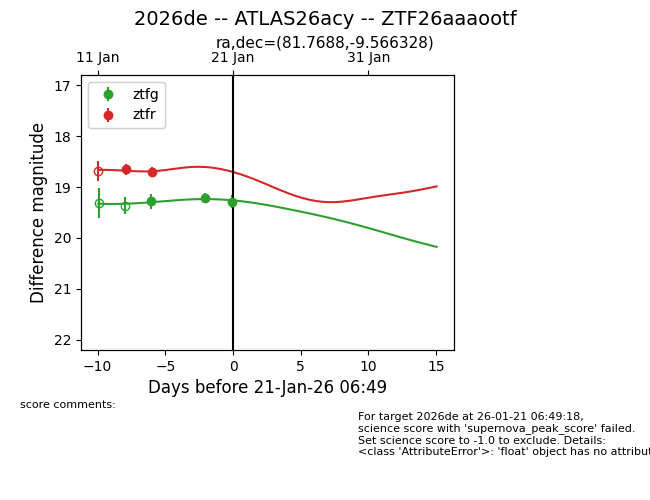
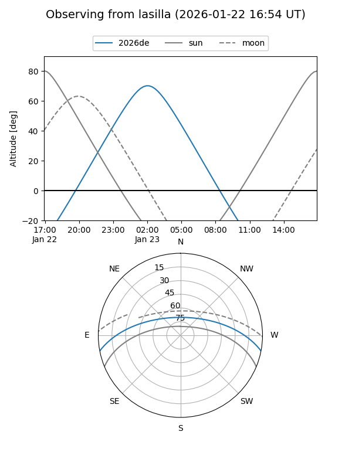
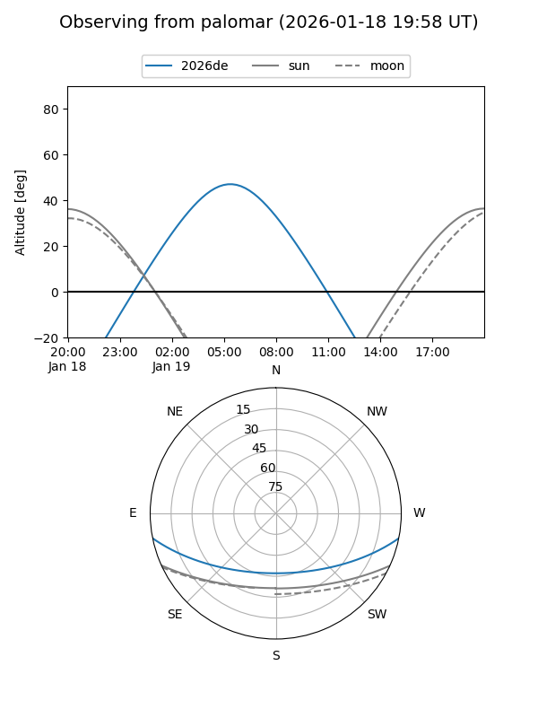
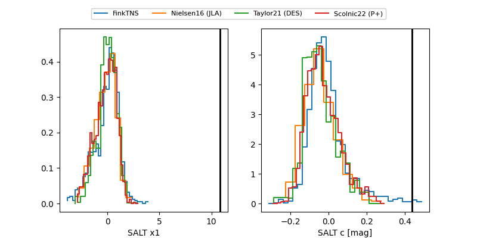

2026de
Target 2026de at 2026-01-24 22:26
Aliases and brokers:
FINK: link
Lasair: link
ALeRCE: link
TNS: link
YSE: link
alt names
ZTF26aaaootf (ztf,fink_ztf)
2026de (tns,yse)
ATLAS26acy (atlas)
Coordinates:
equatorial (ra, dec) = 81.7688,-9.56633
equatorial (HMS+DMS) = 05:27:04.52,-09:33:58.78
galactic (l, b) = (212.0667,-23.05305)
Flags:
Photometry:
last ztfg=19.29, ztfr=18.63
3 ztfg, 4 ztfr detections
Lightcurve

Visibility


Additional plots
